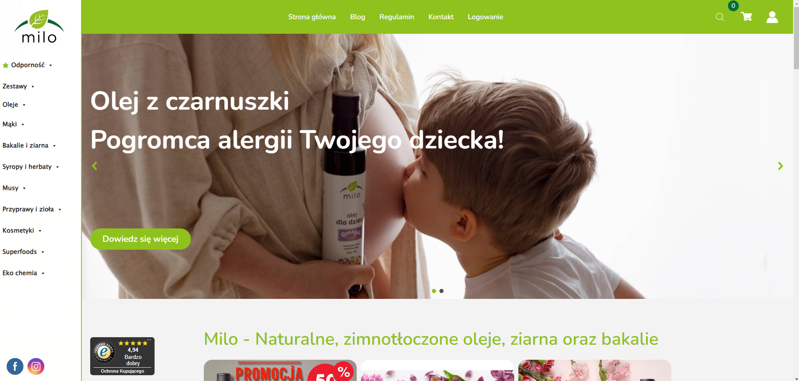
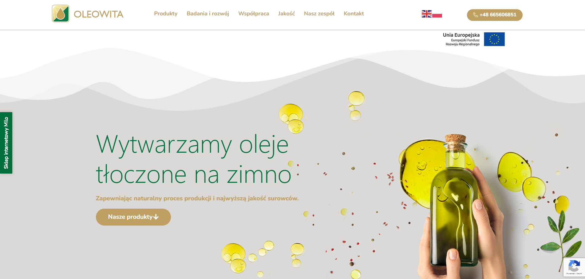
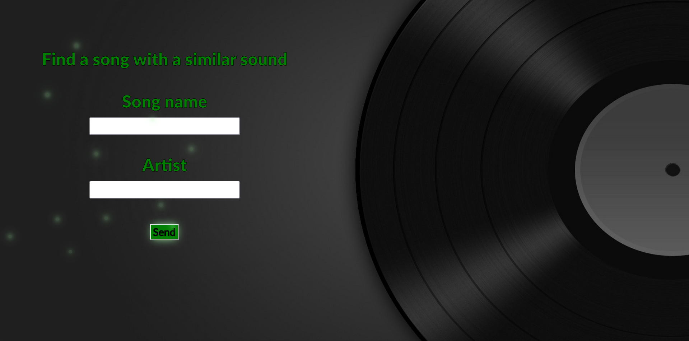
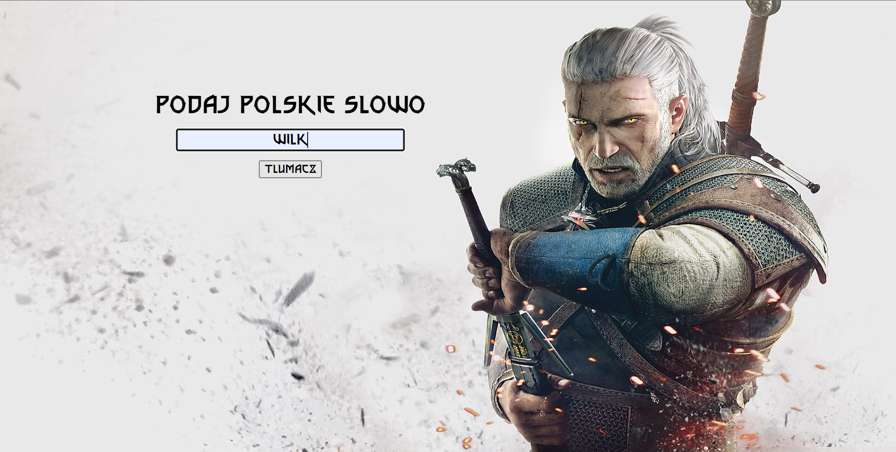

Sklep internetowy Olejemilo.pl

Strona internetowa Oleowita.pl

Aplikacja wyszukuje utwory o podobnym brzmieniu na podstawie danych takich jak poziom energii, nastrój itp. Aplikacja korzysta z prostej sieci neuronowej oraz API Spotify. Został zbudowany w oparciu o framework FastAPI. Można ją pobrać tutaj

Słownik internetowy wykorzystujący bazę danych MySQL oraz FastApi, który po wprowadzeniu Polskiego słowa wyszukuje jego odpowiednik w starszej mowie z Wiedźmina. Można ją pobrać tutaj

Jest to gra survival 2d napisana w pythonie. Klient to aplikacja desktopowa,która łączy się z serwerem. W ten sposób funkcjonuje ranking, dzięki któremu oprócz rozgrywki singleplayer istnieje również rywalizacja Czysta gra Klient Serwer